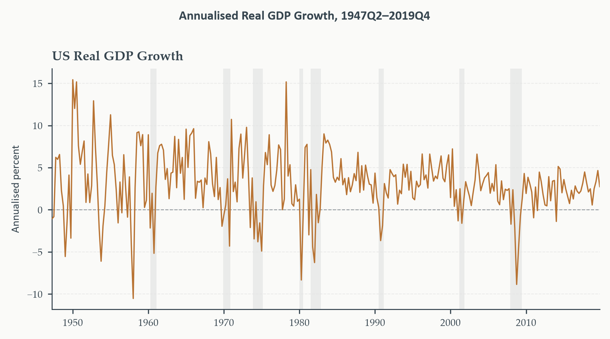
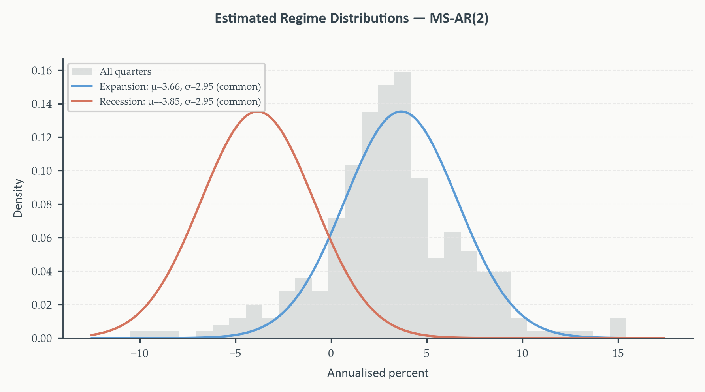
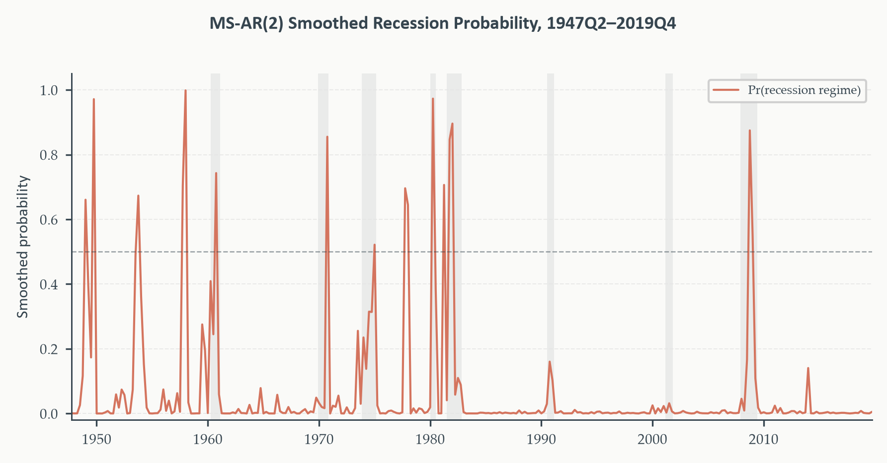
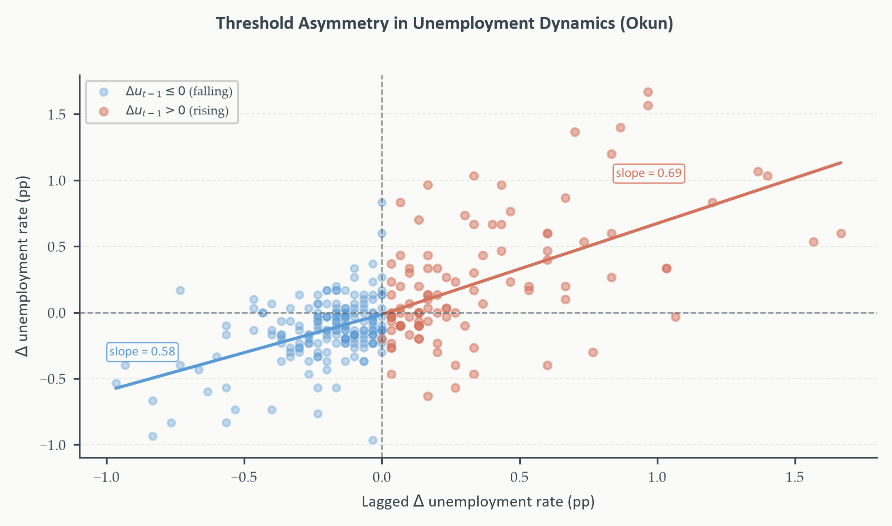

Chapter 10
2026-08-31
The ARMA coefficients from Chapter 3. The GARCH dynamics from Chapter 9. The VAR coefficients from Chapter 7. What do all of them silently share?
This chapter relaxes that assumption in the most disciplined way available. Not letting parameters drift continuously — allowing them to take one of a small number of discrete values, switching between them according to a hidden Markov chain. The economy is always in one state or another; which state, at any given quarter, is unobserved and must be inferred probabilistically.
One model, one algorithm, two complementary extensions:
Running example: US real GDP growth, continued from Chapter 4 — this time asking not “what’s the best ARIMA fit” but “does growth behave like one process, or two?”
Section 1
Chapter 4 asked: given the history of GDP growth up to today, what’s the best prediction for next quarter? Where did that answer come from?
A single estimated equation whose coefficients were fixed for the entire postwar sample — the same mean, the same persistence, the same variance in 1955 Q1 as in 2009 Q1.
Convenient. Not obviously true. NBER recession dating — a broad reading of macroeconomic activity — already tells us the economy moves through qualitatively distinct phases. Does GDP growth’s own statistical behavior confirm that, or is it an artifact of how recessions happen to get labeled?

Outside the shaded recessions: growth positive, moderately persistent, clustered around a stable trend. Inside them: growth turns sharply negative, volatility increases, the series behaves like a genuinely different data-generating process.
A single linear model treats every observation as a draw from the same distribution — a restriction this figure directly challenges. Whether that restriction is costly enough to abandon is what the rest of the chapter tests formally.
If GDP growth really were one process throughout, its unconditional distribution should look like a single bell curve. Does it?
No — and the deviations from normality cluster precisely around NBER recessions. A histogram of quarterly growth shows a heavier left tail and excess kurtosis relative to a single Gaussian fit — exactly the signature two overlapping distributions with different means would produce, mixed together. This is the same kind of evidence Chapter 9’s ARCH-LM test formalized for volatility clustering — here, applied to the possibility of switching means instead of switching variances.
Chapter 6 gave us formal tools for a one-time structural break — Chow, QLR, Bai-Perron. GDP growth doesn’t look like it broke once and stayed changed; it looks like it moves back and forth between two states repeatedly, across the whole postwar sample.
This is exactly the recurring generalization Chapter 6 flagged and deferred. A structural break model asks “did the process change, once, at some date \(\tau\)?” A regime-switching model asks “which of \(M\) states is the process in right now, understanding that it may have switched before and will switch again?” Same underlying concern — parameter instability — genuinely different mathematical machinery.
The next section builds that machinery from first principles.
Section 2
Two-state first-order Markov chain. \(s_t\in\{0,1\}\): expansion, recession. The chain is memoryless — tomorrow’s regime depends only on today’s, not on the full history:
\[ P = \begin{pmatrix}p_{00}&p_{01}\\p_{10}&p_{11}\end{pmatrix}, \qquad p_{ij}=\Pr(s_t=j\mid s_{t-1}=i) \]
Each row sums to 1: \(p_{00}+p_{01}=1\), \(p_{10}+p_{11}=1\) — only two free parameters, \(p_{00}\) and \(p_{11}\).
\(p_{00}\) near 1: expansions persist. \(p_{11}\) near 1: recessions persist. Neither is fixed by assumption — both are estimated from the data.
If \(p_{00}=0.94\), how many quarters does an expansion last on average, before switching?
A geometric distribution. Staying in state \(i\) for exactly \(k\) periods requires \(k-1\) successive “stay” draws, then one “leave” — probability \(p_{ii}^{k-1}(1-p_{ii})\). The expected duration:
\[ \mathbb{E}[\text{duration in state }i] = \frac{1}{1-p_{ii}} \]
At \(p_{00}=0.94\): expected expansion length \(=1/0.06\approx16.7\) quarters, over 4 years. At \(p_{11}=0.75\): expected recession length \(=1/0.25=4\) quarters, exactly one year. Both broadly match postwar NBER cycle chronology.
Over a very long sample, what fraction of quarters does the economy spend in each regime — independent of where it started?
Ergodic distribution. The fixed point \(\boldsymbol\pi=P'\boldsymbol\pi\), \(\sum_i\pi_i=1\). For the two-state case:
\[ \pi_0 = \frac{1-p_{11}}{(1-p_{00})+(1-p_{11})}, \qquad \pi_1=1-\pi_0 \]
\(\pi_0\) depends only on the two transition probabilities — nothing about GDP growth’s actual values enters this calculation at all.
\(p_{00}=0.94\), \(p_{11}=0.75\):
\[ \pi_0 = \frac{1-0.75}{(1-0.94)+(1-0.75)} = \frac{0.25}{0.06+0.25} = \frac{0.25}{0.31} \approx 0.81 \]
The economy spends 81% of its time in expansion, 19% in recession — consistent with NBER’s own classification of roughly 15-20% of postwar quarters as recessionary. This number falls entirely out of the transition matrix; it’s a check on internal consistency, not yet a claim about GDP growth itself.
With the Markov chain in place, write the model for GDP growth itself:
Markov-switching autoregression of order \(k\).
\[ y_t = \mu_{s_t}+\sum_{j=1}^k\phi_j(y_{t-j}-\mu_{s_{t-j}})+\varepsilon_t, \qquad \varepsilon_t\sim N(0,\sigma_{s_t}^2) \]
\(\mu_m,\sigma_m^2\): regime-specific. \(\phi_j\): shared across regimes. Full parameter vector: \(\theta=(\mu_0,\mu_1,\sigma_0^2,\sigma_1^2,\phi_1,\ldots,\phi_k,p_{00},p_{11})\).
The AR correction term is \(\mu_{s_{t-j}}\) — the regime-specific mean at time \(t-j\), not time \(t\). Why does that make estimation harder than an ordinary ARMA?
Conditioning on today’s regime alone isn’t enough — the correction depends on which regime applied at every past lag, and those were themselves unobserved. To evaluate the likelihood at time \(t\), we must sum over every possible combination of past regimes consistent with the current one. This isn’t a minor computational inconvenience; it’s exactly what the Hamilton filter, Section 3’s subject, is built to handle efficiently.
| Specification | Mean switches | Variance switches | Extra params |
|---|---|---|---|
| Mean-switching only | Yes | No | \(\mu_0,\mu_1,\sigma^2\) |
| Variance-switching only | No | Yes | \(\mu,\sigma_0^2,\sigma_1^2\) |
| Both | Yes | Yes | \(\mu_0,\mu_1,\sigma_0^2,\sigma_1^2\) |
For GDP growth, the case for mean-switching is clear and strong. The gap between expansion mean (3.71%) and recession mean (\(-1.41\)%) — 5.1 percentage points — is the dominant feature of the data. Regime-specific standard deviations are nearly identical across the two NBER-classified phases: variance switching adds little real signal here, and actively creates an estimation problem — the likelihood surface develops a variance-only local optimum that’s numerically easier to find than the genuine mean-switching solution.
The working model for this chapter: mean-switching MS-AR(2), common variance — following Hamilton (1989) exactly. Not a simplification of convenience; the data themselves argue for it. Section 4 revisits variance-switching as a deliberate modeling choice, not a default.
Section 3
Given everything observed through today, what’s the probability the economy is currently in each regime?
\[ \Pr(s_t=j\mid y_1,\ldots,y_t), \qquad j\in\{0,1\} \]
A filtering problem — \(s_t\) is hidden; the observations carry information about it. The Hamilton filter extracts that information recursively, one observation at a time, left to right through the sample. Two objects at each date: filtered probabilities \(\xi_{t|t}\) (using data through \(t\)) and predicted probabilities \(\xi_{t|t-1}\) (before observing \(y_t\)) — the one-step-ahead regime forecast.
\[ \xi_{t|t-1} = P'\xi_{t-1|t-1} \]
Written out for the two-state case:
\[ \Pr(s_t=0\mid\mathcal{F}_{t-1}) = p_{00}\Pr(s_{t-1}=0\mid\mathcal{F}_{t-1})+p_{01}\Pr(s_{t-1}=1\mid\mathcal{F}_{t-1}) \]
In words: the predicted probability of expansion tomorrow is “probability of expansion today and staying” plus “probability of recession today and switching.” No observation of \(y_t\) has entered yet — pure projection through the transition matrix.
When \(y_t\) arrives, revise the prediction via Bayes’ rule:
\[ f(y_t\mid s_t=j,\mathcal{F}_{t-1}) = \frac{1}{\sqrt{2\pi\sigma_j^2}}\exp\left(-\frac{(y_t-\mu_j^*)^2}{2\sigma_j^2}\right) \]
\[ \Pr(s_t=j\mid\mathcal{F}_t) = \frac{f(y_t\mid s_t=j,\mathcal{F}_{t-1})\cdot\Pr(s_t=j\mid\mathcal{F}_{t-1})}{\sum_mf(y_t\mid s_t=m,\mathcal{F}_{t-1})\cdot\Pr(s_t=m\mid\mathcal{F}_{t-1})} \]
Updated probability \(\propto\) likelihood \(\times\) prior. The denominator normalizes to sum to one — and is itself the marginal density of \(y_t\) given the past, summed across \(t\) to build the log-likelihood used for estimation in Section 4.
The Hamilton filter. Given initial \(\xi_{1|0}\) (typically the ergodic distribution), iterate for \(t=1,\ldots,T\):
Predict, then correct with new data — the same two-step logic underlying every recursive filter in this course, now applied to a discrete hidden state.
\(\mu_0=3\), \(\mu_1=-2\), \(\sigma^2=4\), \(p_{00}=0.9\), \(p_{11}=0.7\). Ergodic initialization: \(\pi_0=0.75\), \(\pi_1=0.25\).
Period \(t=1\): \(y_1=4.2\) — a strong expansion quarter.
\[ f(y_1\mid s_1=0)=\phi\left(\frac{4.2-3}{2}\right)=\phi(0.60)\approx0.333, \qquad f(y_1\mid s_1=1)=\phi\left(\frac{4.2+2}{2}\right)=\phi(3.10)\approx0.003 \]
\[ \Pr(s_1=0\mid y_1) = \frac{0.333\times0.75}{0.333\times0.75+0.003\times0.25} = \frac{0.250}{0.251}\approx0.996 \]
A single quarter of strong growth pushes the expansion probability to 99.6%. The observation was overwhelmingly more consistent with one regime than the other — the filter reflects that decisively.
Period \(t=2\): predict forward first, then \(y_2=-3.8\) arrives — a sharp contraction.
\[ \Pr(s_2=0\mid y_1) = 0.9(0.996)+0.3(0.004)\approx0.897 \]
Even before seeing \(y_2\), expansion’s high persistence keeps the predicted probability at 89.7%. Then:
\[ f(y_2\mid s_2=0)=\phi(-3.40)\approx0.001, \qquad f(y_2\mid s_2=1)=\phi(-0.90)\approx0.266 \]
\[ \Pr(s_2=0\mid y_1,y_2) = \frac{0.001\times0.897}{0.001\times0.897+0.266\times0.103} \approx0.032 \]
One quarter of sharply negative growth drives the expansion probability from 89.7% to 3.2%. This is the filter’s real character: high persistence keeps predictions sticky, but a sufficiently informative observation can override that persistence almost entirely, in a single step.
Filtered \(\xi_{t|t}\): real-time, causal — uses only data through \(t\), exactly what a forecaster could have computed at the time. Smoothed \(\xi_{t|T}\): uses the entire sample, running the filter forward then a backward pass (the Kim, 1994 smoother) that propagates later evidence back through the transition structure.
Which to use is not a matter of taste. Real-time forecasting evaluation: filtered probabilities, or risk look-ahead bias — exactly Chapter 5’s warning, now in a new setting. Historical classification against NBER dates: smoothed probabilities, since NBER’s own dating is itself retrospective. Using the wrong one for the task at hand quietly contaminates the comparison.
Prior, likelihood, posterior, forward projection — every piece of the Hamilton filter has a direct counterpart somewhere else in statistics. Where?
The Kalman filter, Chapter 11, solves the identical problem for a continuous hidden state. Same prediction-correction logic throughout. The only real difference: here, the state is discrete — the prior/posterior are probability vectors, and the “densities” are Gaussian mixtures. There, the state is continuous and Gaussian — the prior/posterior are a mean vector and covariance matrix, and the updates are linear. The Kalman filter is, in a precise sense, the Gaussian-state analogue of exactly this algorithm.
Nothing in Chapter 11 will feel genuinely unfamiliar — the architecture is already built.
Section 4
The Hamilton filter delivers more than regime probabilities — the normalizing constant at each update step is the marginal density of \(y_t\) given the past:
\[ \ell(\theta) = \sum_{t=1}^T\log f(y_t\mid\mathcal{F}_{t-1};\theta) \]
MLE maximizes \(\ell(\theta)\) over \(\theta=(\mu_0,\mu_1,\sigma_0^2,\sigma_1^2,\phi_1,\phi_2,p_{00},p_{11})\). Each evaluation requires running the full filter — \(T\) prediction-update cycles — genuinely more expensive than OLS, but entirely tractable at typical macroeconomic sample sizes.
Swap every regime-0 parameter with regime-1, and every regime-1 with regime-0. What happens to the likelihood?
Nothing — it’s exactly unchanged. The regimes are interchangeable in the likelihood itself; the surface has two symmetric solutions, and an unguided optimizer can converge to either. Left unresolved, statsmodels can settle on a variance-only split — two clusters both centered near positive growth, distinguished only by dispersion — rather than the economically meaningful expansion/contraction separation.
The fix: supply starting values encoding the economic prior directly — a positive mean near trend growth for expansion, a negative mean for recession. Then verify after estimation: regime 0 should have the higher mean, and the implied ergodic recession share should be plausible (roughly 10-20% for postwar US data).
| Parameter | Expansion | Recession |
|---|---|---|
| Mean \(\hat\mu\) | \(3.66^{***}\) | \(-3.85^{***}\) |
| Std. dev. \(\hat\sigma\) | 2.95 (common) | 2.95 (common) |
| \(p_{ii}\) (persistence) | 0.956 | 0.400 |
\(\hat\phi_1=0.338^{***}\), \(\hat\phi_2=0.154^{***}\) — both significant, capturing the modest positive serial correlation Chapter 4’s ARIMA also found.
The estimated mean gap — 7.5pp — is wider than the raw NBER-classified gap (5.1pp). The model assigns recession quarters more decisively than NBER dates spread across a full quarter of transition. Everything else lines up closely with Section 1’s descriptive statistics.
\(\hat p_{00}=0.956\) implies expansions last 22.7 quarters — 5.7 years, very plausible. \(\hat p_{11}=0.400\) implies recessions last 1.7 quarters — shorter than any NBER recession on record. What’s going on?
The mean-switching specification identifies “recession” as individual sharply-negative observations, not sustained contractions. Each deep-negative quarter looks, to the likelihood, like an independent visit to the recession regime — producing a high exit probability even though actual recessions last several quarters. The 6.8% ergodic recession share is plausible (close to NBER’s 11.7%), but achieved through many brief visits rather than fewer sustained ones.
A known limitation of this specification, not an error. Allowing AR dynamics or variance to switch as well could produce more realistic durations — at the cost of the estimation difficulties Section 2 already flagged.

Expansion (sky blue, \(\hat\mu=3.66\)) and recession (terracotta, \(\hat\mu=-3.85\)) share the common \(\hat\sigma=2.95\). The two distributions overlap substantially between \(-2\%\) and \(2\%\) — exactly why mild negative quarters generate only moderate recession probabilities. Below \(-4\%\): unambiguously recession. Above \(5\%\): unambiguously expansion.
The model never sees NBER dates during estimation — only GDP growth itself. If smoothed probabilities align with recession shading anyway, that’s genuine evidence the two-state structure captures something real.

Fires clearly on 1960-61 (probability reaching 1.0), 1973-75, 1981-82, and the 2008-09 GFC (near 0.9). Response but no sustained signal for 1980.
1990-91 and 2001 are largely missed — both mild by historical standards, no quarters of sharply negative growth. An honest limitation: the model recovers recessions defined by deep contractions and misses mild growth slowdowns entirely, exactly what a mean-switching specification with wide overlapping distributions would predict.
Everything so far describes the past well. Does regime-switching actually improve forecasts, the way Chapter 5’s framework demands we ask?
Same design as Chapter 5: rolling window, fixed evaluation period, one-step-ahead MSFE.
It doesn’t — over this evaluation window. ARIMA(2,0,0): MSFE 4.383, MAE 1.542. MS-AR(2): MSFE 4.422, MAE 1.547. The regime-switching model does not outperform the linear benchmark out of sample.
The evaluation window (1985-2019) covers the Great Moderation — Chapter 6’s own running example — an era of unusually stable growth with only two mild recessions (1990-91, 2001), both of which the smoothed-probability figure just showed the model largely misses. The MS-AR’s comparative advantage is detecting sharp contractions — precisely the type this particular window contains too few of to overcome ARIMA’s parsimony advantage.
A window including the 1970s and early 1980s — genuinely deep recessions, exactly what the model does recover well — would almost certainly reverse this ranking. The out-of-sample test isn’t a verdict against Markov-switching in general; it’s a verdict about this model on this specific, unusually calm evaluation period.
Section 5
Every model so far assumed the regime \(s_t\) is genuinely hidden — inferred, never observed. Is that the only way to build a regime-switching model?
Markov-switching: regime \(s_t\) is latent, governed by transition probabilities \(p_{ij}\); we infer it, never observe it directly.
Threshold models: the regime is determined by whether an observable variable \(q_t\) — the threshold variable — sits above or below a threshold \(\gamma\). We know the regime immediately, once \(\gamma\) is estimated.
When each is the right tool. Markov-switching fits better when the driving force is genuinely latent — sentiment, financial stress. Threshold models fit naturally when a specific observable is the plausible trigger — the unemployment rate rising vs. falling, an asset price crossing a known support level.
Threshold autoregression (TAR). AR coefficients switch depending on whether \(y_{t-d}\) crosses a threshold \(\gamma\):
\[ y_t = \begin{cases}\phi_{1,0}+\phi_{1,1}y_{t-1}+\cdots+\varepsilon_t & y_{t-d}\leq\gamma \\ \phi_{2,0}+\phi_{2,1}y_{t-1}+\cdots+\varepsilon_t & y_{t-d}>\gamma\end{cases} \]
Self-exciting TAR (SETAR): the threshold variable is a lag of \(y_t\) itself — the process determines its own regime.
Applied to GDP growth with \(d=1\): do dynamics differ depending on whether last quarter’s growth was negative or positive — a natural formalization of asymmetric business-cycle propagation, with no hidden state to estimate.
Conditional least squares. For any candidate \(\gamma\): split the sample by \(y_{t-d}\leq\gamma\) or not, estimate two separate AR regressions by OLS, collect the SSR. \(\hat\gamma\) minimizes total SSR across a grid of candidates — no numerical likelihood optimization required, unlike the Hamilton filter.
\(\hat\gamma\) has a non-standard limiting distribution — Hansen (1997) provides the asymptotic theory and a bootstrap procedure for its confidence interval.

Quarterly \(\Delta u_t\) against \(\Delta u_{t-1}\), split at zero — no grid search needed here, an economically motivated threshold. Rising regime (terracotta, \(\Delta u_{t-1}>0\)): visibly steeper slope — once unemployment starts rising, it tends to keep rising with strong momentum. Falling/stable regime (sky blue): weaker persistence. The Okun asymmetry, made concrete without any hidden state at all.
TAR switches sharply — the economy is entirely in one regime or the other. What if the transition itself is gradual?
Smooth transition autoregression (STAR). Replace the indicator with a smooth function \(G_t=G(q_t;\gamma,c)\in[0,1]\):
\[ y_t = (1-G_t)(\phi_{1,0}+\boldsymbol\phi_1'\mathbf{y}_{t-1})+G_t(\phi_{2,0}+\boldsymbol\phi_2'\mathbf{y}_{t-1})+\varepsilon_t \]
\(q_t\): transition variable. \(c\): location — where \(G_t=0.5\). \(\gamma\): speed — large \(\gamma\) approaches TAR’s sharp switch; small \(\gamma\) gives a gradual, near-linear transition.
\[ \text{LSTAR: } G_t=\frac{1}{1+\exp(-\gamma(q_t-c))} \qquad\qquad \text{ESTAR: } G_t=1-\exp(-\gamma(q_t-c)^2) \]
LSTAR: monotone — regime-2 weight rises smoothly as \(q_t\) crosses \(c\). ESTAR: symmetric U-shape — regime-2 weight is high when \(q_t\) is far from \(c\) in either direction, low near \(c\). Natural when the middle of the distribution is “normal times” and both extremes represent crisis or boom.
As \(\gamma\to\infty\) in LSTAR: \(G_t\to\mathbf{1}[q_t>c]\) — STAR nests TAR as a limiting case, not a separate family.
Section 6
Everything this chapter built was univariate — one series, one hidden regime. Chapter 7 built VARs for genuinely multivariate systems. What happens where the two frameworks meet?
The MS-VAR — coefficient matrices and the covariance matrix of a VAR switch across regimes, governed by the same hidden Markov chain machinery this chapter developed. The intuition carries over directly: same prediction-correction logic, same smoothed-probability output, same labelling-indeterminacy challenge — now with the added richness of regime-dependent cross-variable dynamics.
Regime-dependent impulse responses matter economically: a monetary policy shock’s transmission to output and inflation (Chapter 7) may look genuinely different during a recession regime than during an expansion — not just in magnitude, but in shape and duration.
Krolzig (1997) provides the canonical treatment and a typology of switching specifications: MSI (intercept-switching), MSM (mean-switching), MSA (AR-coefficient-switching), MSH (heteroscedastic variance-switching) — and combinations of these, exactly the same mean/variance-switching menu Section 2 built for the univariate case, now applied coefficient-matrix by coefficient-matrix.
Software support is genuinely uneven. R offers MSwM and MSBVAR; Python’s statsmodels.tsa.regime_switching handles the univariate case cleanly but full MS-VAR estimation typically requires bespoke code. This chapter’s applied work stayed univariate for exactly this reason — not a limitation of the theory, a reflection of tooling maturity.
We relaxed the fixed-parameter assumption every prior chapter carried silently. The two-state Markov chain — transition probabilities, ergodic distribution, expected duration — gave a formal language for “the economy is always in one state or another, and we don’t know which.” The Hamilton filter turned that language into an algorithm: predict, then correct with new data, exactly the recursive logic underlying every filter in this course. Applied to GDP growth, the model recovered genuine recessions the data never labeled for it — and honestly missed the mild ones, and honestly lost to a plain ARIMA out of sample over a calm evaluation window, for reasons the Great Moderation itself explains. Threshold models offered the observable-state complement; MS-VAR, briefly mapped, extends everything to genuinely multivariate systems.
Every element of the Hamilton filter — prior, likelihood, posterior, forward projection — has a direct counterpart waiting in Chapter 11. The only real difference: there, the hidden state is continuous, not discrete.
The Hamilton filter solves a discrete inference problem: recover the probabilities of belonging to one of \(M\) hidden states from a sequence of observations. Prediction projects the current state distribution through a finite transition matrix; the update applies Bayes’ rule with a Gaussian likelihood evaluated at the current observation.
Chapter 11’s Kalman filter solves the identical problem for a continuous hidden state. Instead of a probability vector over \(M\) regimes, the state is a real-valued vector \(\boldsymbol\alpha_t\) evolving via a linear Gaussian state equation. Instead of a finite transition matrix, a state transition matrix \(T\) and Gaussian process noise. Instead of a mixture of \(M\) Gaussians at each step, a single multivariate Gaussian, updated by the Kalman gain — the multivariate analogue of the weight Bayes’ rule assigns to new data relative to the prior. Chapter 11 builds this from scratch, starting with the local level model and working up to multivariate systems capable of extracting genuinely unobserved economic quantities: the output gap, trend inflation, the natural rate of interest. Nothing in it will feel unfamiliar — the architecture is already built.
ECON-5371 · Time Series Analysis and Forecasting